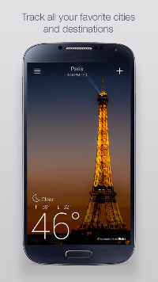

Social Photography, Community, and Human-in-the-loop AI Systems
Back to Home PageThis was a talk given by David Ayman Shamma, currently a director of research at Yahoo! Labs and Flickr where he heads the Human-Computer Interaction Research group. He gave this talk at Texas A&M University on Feb 1 2016. It covered several aspects of system design, software engineering, and AI using examples of problems solved by the HCI research division at Yahoo! Labs.
Part 1: Human-in-the-loop AI systems
In the first part of the talk, Dr. Shamma covered a problem they solved at Flickr in relation with Yahoo weather. The Yahoo weather application for iOS and Android is a modern smartphone weather application.  The application as one can see, presents the user with beautiful images of their current region. Dr. Shamma went on to describe the process used to find images matching the region and current weather conditions. It was a manual process of curation with editors going through each image. The process of discovery of new images to review was manual and involved looking through "favoriting" interactions of connected people to find more images of a certain kind. The ingest pool of the editors was, at the time, around 47,000 images requiring review.The images editors chose had to meet requirements, such as:
- Clarity
- Size
- No pedestrians/faces
- No borders
- No watermarks
The effect of this process was that under the new system, the photographs had an acceptance rate of 30% (which is high considering two stages of review). This above approach to not simply supplanting human editors, but aiding them with AI systems using their input to get better and train software to help humans become more effective at their job proved successful. The productivity of editors was significantly increased with this process improvement.
Part 2: Study of photographs en masse
One of the interesting parts of this talk was Dr. Shamma's description of research they conducted on how filters, especially those that modern photo sharing applications like Instagram and Flickr apply, affect user engagement with the photographs. The full paper goes into the details. The primary technique they employed for this study was negative binomial regression. They studied the 7.6 million Flickr photographs set, and drew some very interesting conclusions. The metrics they studied under the aforementioned model were engagement, measured in terms of views and commenting activities on photographs. They observed that filtered photos were 21 percent more likely to be viewed and 45 percent more likely to be commented on.Furthermore, they analyzed the types of photographs which were most impacted by the use of filters. First, they used Amazon Mechanical Turk to categorize photographs under a variety of different categories, such as 'Nature', 'People', 'Things' and so on. They found that nature photographs showed a drop in engagement upon the application of filters , pictures of people showed mixed results, and photographs of 'things' showed a positive impact on engagement when filters were applied.